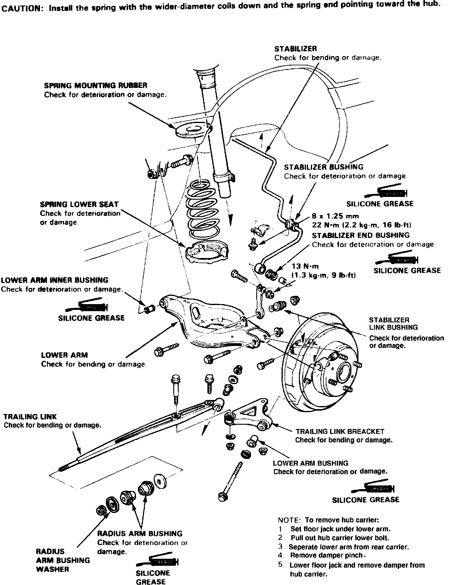
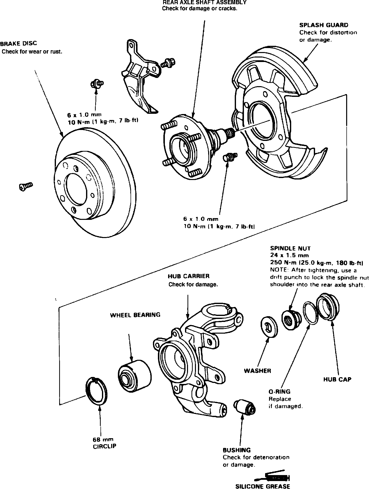
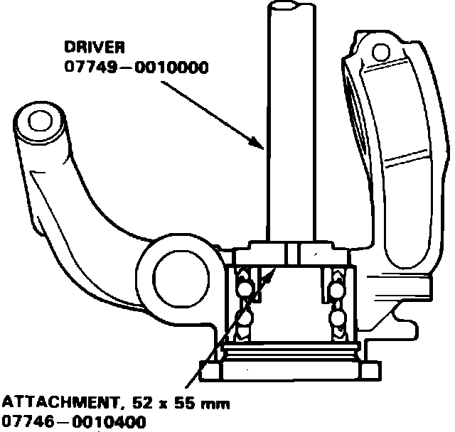
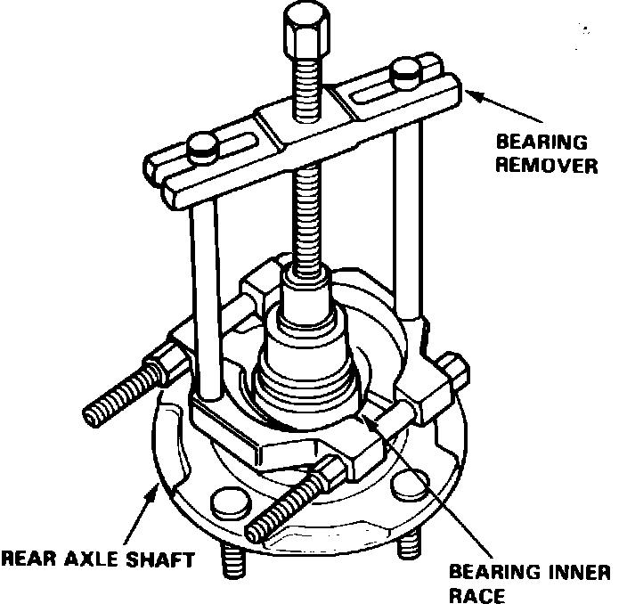
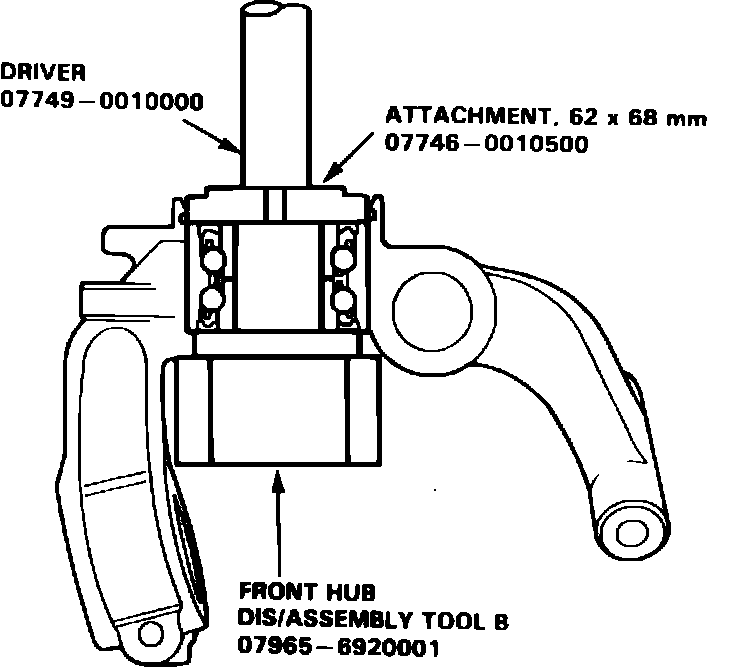

Rear
Fig. 2 Exploded view of rear suspension components. Legend:

1. Remove hub carrier assembly as shown in Fig. 2.
Fig. 3 Exploded view of hub carrier & rear axle shaft. Legend:

2. Remove splash guard and circlip from hub carrier, Fig. 3.
Fig. 8 Wheel bearing removal. Legend:

Fig. 9 Wheel bearing inner race removal. Legend:

3. Remove bearing from rear hub, then the bearing inner race from axle shaft, Figs. 8 and 9.
Fig. 10 Wheel bearing installation. Legend:

4. Press new bearing into hub carrier as shown, Fig. 10.